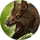

Стая
Открыть в интерактивной вики →
Описание
Навык, предназначенный для одиночных бойцов, которые хотят иметь в команде более одного питомца одновременно. В зависимости от уровня стаи вы можете иметь более могущественных существ или большее их количество. Сила питомца определяется его рангом.
Тип: пассивный
Тип: пассивный
Уровни навыка
| Уровень навыка | Требуемый уровень | Сумма рангов | Макс. количество питомцев |
|---|---|---|---|
| I | 35 | 3 | 2 |
| II | 40 | 4 | 2 |
| III | 45 | 5 | 2 |
| IV | 50 | 7 | 2 |
| V | 55 | 8 | 2 |
| VI | 60 | 9 | 2 |
| VII | 65 | 10 | 2 |
| I | 70 | 11 | 2 |
| II | 75 | 13 | 2 |
| III | 80 | 14 | 2 |
| IV | 85 | 15 | 3 |
| V | 90 | 16 | 3 |
| VI | 95 | 17 | 3 |
| VII | 100 | 19 | 3 |